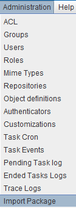
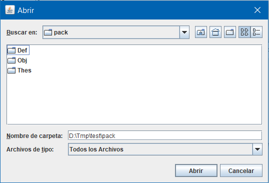
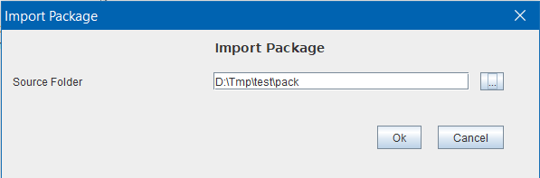

in order to help the deployment in diferent enviroments of "projects" in OpenProdoc, it's possible to define "Packages".
It should be understood "Package" as folder containing a set of definitions of document or folder types, Roles, Groups, ACL, Scheduled Tasks, Events Tasks, .. as well as Thesauri and folder trees containing folders and documents, of any of the previously defined types. The objective of this function is to prepare parameterizations for specific scenarios or uses (teaching centers, professional offices, NGOs, etc.) that can be deployed between environments of the same institution or clients after carrying out a task of document consulting and parameterization of OpenProdoc.
Although all operations can be performed separately and manually without using the Package option, the preparation of a package simplifies the work and ensures automation, so that once tested in a testing environment, it can be imported into any destination environment automatically.
For this, the following steps must be carried out::
The first step will be to create the definitions of document or folder types, profiles, groups, tasks, etc. necessary to be able to work in the type of institution or process in which OpenProdoc will be used. Any element that can be defined in the OpenProdoc administration options can be included in a package.
In addition to the definitions themselves, for the handling of document or folder types it will have been necessary to create thesauri that will be associated with the metadata of the defined types, or sometimes they can simply be defined as help and analysis, as is done in other tools of thesaurus management alone. These thesauri should be defined and filled with the necessary terms, structure and relationships.
Sometimes it will be necessary to create a folder structure (reflecting the administrative structure, geographic, etc.) or it will be necessary to create customized reports, OPAC configutration files or reports files.
All those necessary folders and documents should be created and tested in the development installation before creating the package. These created elements may be based on definitions of types, or reference security elements, previously defined, so before transferring them to the destination environment, these definitions must exist in that environment, so they must be exported and imported previously.
After creating and testing all definitions, they must be exported one by one. Since some definitions can depend on others (for example, an ACL can reference Groups, an Object Type can reference another parent type, etc.), it is necessary to indicate an import order, so that when an element is imported, others elements required are imported previously.
This order to be applied will be the alphabetical order of the file names. For this you can rename the files; for example, include a numeric prefix before the name of the exported item. So, they can be renamed:
01_EmployeesGroup.opd.Regarding the Thesauri, all the thesauri used in metadata of the types of objects must be exported, using the SKOS format, as well as any auxiliary thesaurus that is considered useful. When imported, the same root, numeric code, language and name must be used to maintain consistency.
The previous functions can be done with any OpenProdoc client (Web or Swing), however the export of folders, by volume and type of content (folder tree containing potentially hundreds of files) must be done with the OpenProdoc Swing client.
All desired folder structures must be exported to reconstruct the configuration at destination. It must be taken into account that the automatic import into destination will be done from the OpenProdoc root folder.
For the subsequent import, the elements that make up the package should be grouped into three folders with predefined names (including uppercase and lowercase to avoid problems in Linux environments):
The import will be done in the order indicated in the previous list:
First, all the thesauri included in Thes folder will be imported, with the parameters described in the file ListThes.csv (whose format is described later).
Subsequently, all the definitions included in Def folder will be imported in alphabetical order. After import, definitions of document types and folders will create their data structures (tables).
Finally, all folder trees contained in Obj folder will be imported, recreating the structures, with their object types (previously defined in the previous step). If a folder exists before the merge, contents of both folders will be added.
The expected format for the ListThes.csv is as follows:
For example, the file may be:
#-------------------------------------------------------------------------------------------------------------------------------------------Although generally a parameterization of OpenProdoc will require all types of elements, it is not necessary that all the elements exist, that is, definitions, thesauri or trees may not be included. However, the three container folders should always be included, as well as the thesaurus enumeration file, even if empty.
After copying the folder structures to the destination installation, using the Swing client, the package can also be imported, by means of the menu option "Administration -> Import Package". This option will present a form to choose the folder that contains the three subfolders of the package.



If within the subfolder ex of the OpenProdoc installation package the subdirectories that compose a package are copied, the installation of OpenProdoc upon completion of the creation of the base elements will auto-installed the installation of the content package.